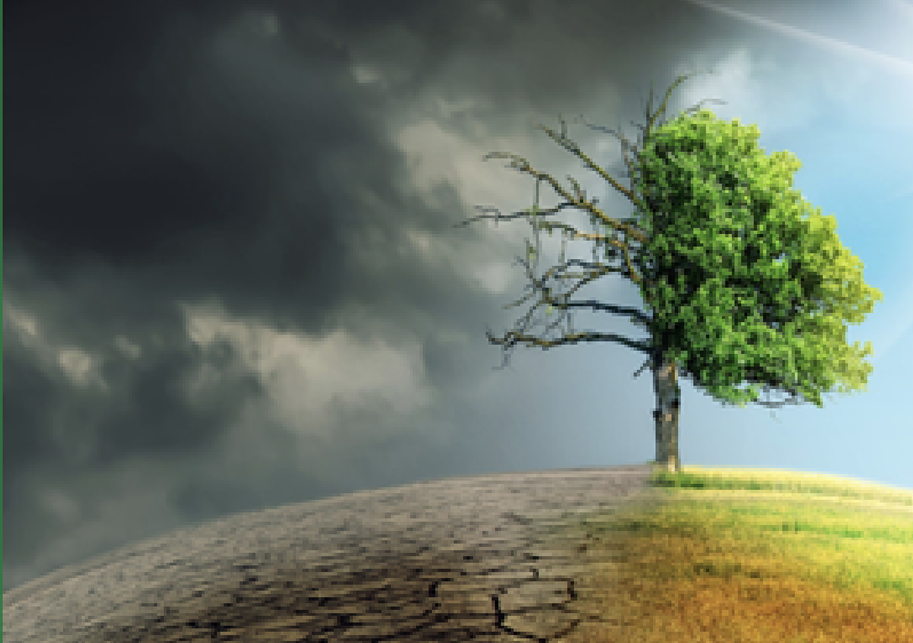
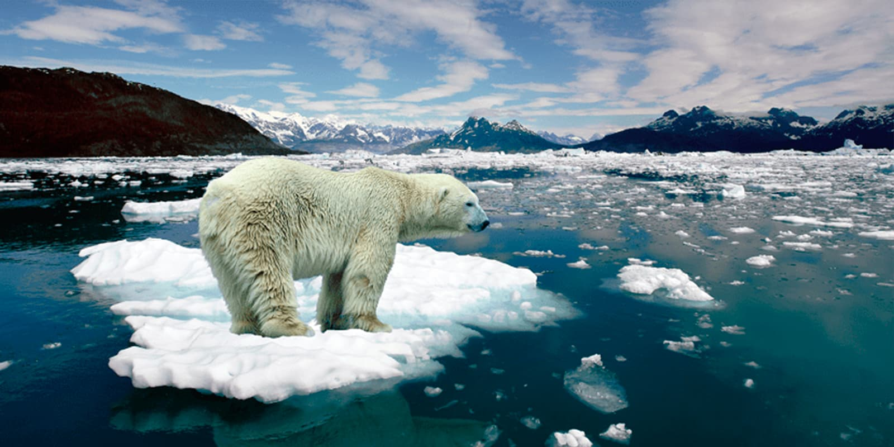
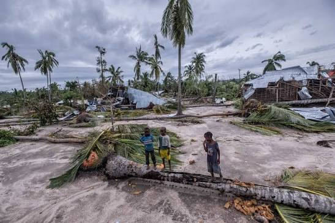

Pricipal Causa
La principal causa del cambio climático es el aumento de los gases de efecto invernadero en la atmósfera. Estos gases, como el dióxido de carbono (CO₂), el metano (CH₄) y el óxido nitroso (N₂O), retienen el calor del Sol y elevan la temperatura global. Entre las actividades que más contribuyen a este problema se encuentran la quema de combustibles fósiles para producir energía y transportar personas y mercancías, la deforestación, la industria y algunas prácticas agrícolas y ganaderas. Además, el crecimiento de la población y el consumo excesivo de recursos naturales han incrementado la contaminación y la generación de residuos

Cuidados básicos para el Rosal
Las consecuencias del cambio climático son cada vez más evidentes. Una de las más importantes es el aumento de la temperatura global, que provoca olas de calor más intensas y frecuentes. También se observa el derretimiento de glaciares y casquetes polares, lo que contribuye al aumento del nivel del mar y pone en riesgo a las comunidades costeras. Asimismo, los fenómenos meteorológicos extremos, como huracanes, sequías, inundaciones e incendios forestales, ocurren con mayor frecuencia e intensidad. Esto afecta la agricultura, la disponibilidad de agua potable y la biodiversidad. Muchas especies animales y vegetales se encuentran en peligro debido a la pérdida de sus hábitats naturales. En el ámbito social y económico, el cambio climático puede generar problemas de salud, inseguridad alimentaria, migraciones y pérdidas económicas significativas.

Para combatir el cambio climático es necesario actuar tanto a nivel individual como colectivo. Una de las principales soluciones es reducir las emisiones de gases de efecto invernadero mediante el uso de energías renovables, como la solar y la eólica, en lugar de combustibles fósiles. También es importante promover el ahorro de energía, utilizar medios de transporte sostenibles, reciclar y reducir el consumo de productos que generan altos niveles de contaminación. La reforestación y la protección de los ecosistemas son medidas fundamentales para absorber dióxido de carbono y conservar la biodiversidad. Los gobiernos, las empresas y la sociedad deben trabajar en conjunto para implementar políticas ambientales efectivas, fomentar la educación ambiental y desarrollar tecnologías más limpias que permitan un crecimiento sostenible.